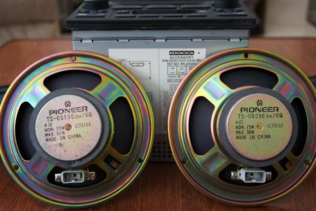
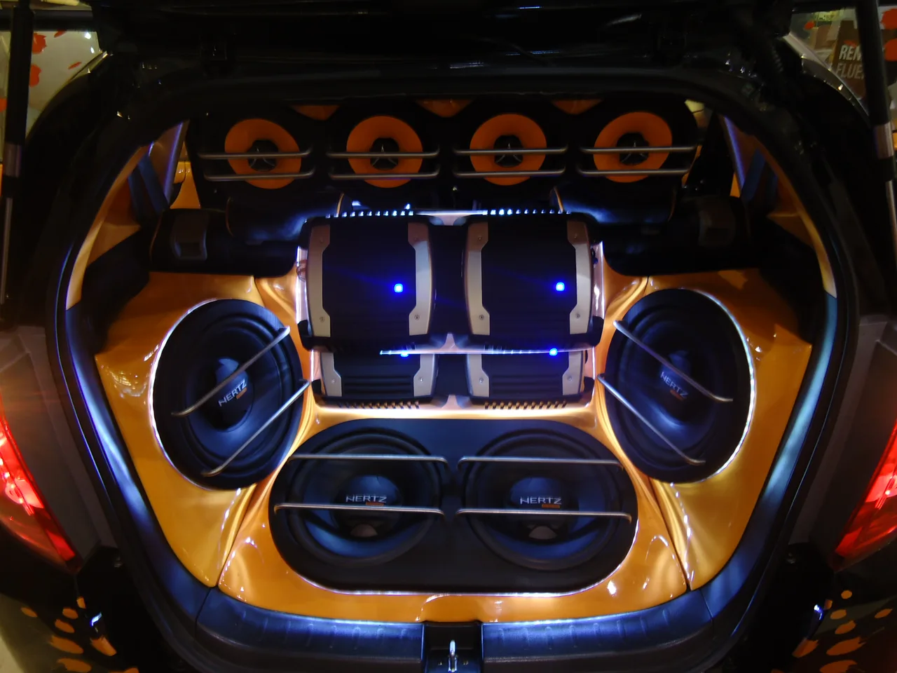

En las bombas de gasolina y en los parques de Santo Domingo y Santiago de los Caballeros, los muchachos del barrio abren las compuertas de sus camionetas para liberar un vendaval de decibeles que sacude los vidrios de la avenida. Una indagación sobre el sound car, la tecnología de audio sobre ruedas y la desobediencia acústica caribeña.
Quien recorra las avenidas de Santo Domingo, de Santiago de los Caballeros o de San Cristóbal en las noches calurosas del fin de semana se topará inevitablemente con una escena que desconcierta a los turistas acostumbrados al silencio regulado de las ciudades del norte: una estación de servicio de gasolina, una plaza de lavado de autos o un parqueadero de esquina transformado en una discoteca a cielo abierto. Allí no hay pista de baile techada ni boletería de entrada; hay una hilera de camionetas tipo pickup y utilitarios familiares estacionados marcha atrás con las compuertas abiertas de par en par, exhibiendo en el espacio de la cajuela un muro de bocinas, drivers de titanio y amplificadores que arrojan al aire un diluvio de bachata, dembow y merengue de calle a niveles de presión sonora que hacen temblar el pavimento.

A este fenómeno la juventud dominicana y caribeña lo llama car audio, discolay o cajas de sonido sobre ruedas, una práctica que la mirada moralizante de las clases altas suele calificar con desprecio como vulgaridad ruidosa y contaminación acústica intolerable. Pero si apartamos el prejuicio de clase y nos acercamos con curiosidad etnográfica a la mecánica de estos vehículos, descubrimos una de las expresiones más audaces de la ingeniería popular y del ingenio autodidacta del siglo veintiuno en América Latina: la conversión de un medio de transporte ordinario en una central acústica rodante de alta fidelidad.
Construir un vehículo de sonido de competición es una faena de alta complejidad electroacústica que demanda meses de cálculo empírico y miles de horas de taller en los callejones de Villa Mella o de Herrera. Los artesanos del sonido retiran los asientos traseros del vehículo y forran el habitáculo entero con planchas de madera MDF de alta densidad y mantas asfálticas insonorizantes para evitar que la lata del automóvil vibre como un cascabel desvencijado bajo la presión de los graves. Luego diseñan a medida las cajas de resonancia con puertos sintonizados para frecuencias bajas, calculando el volumen exacto de litros de aire que cada altavoz de quince o dieciocho pulgadas necesita para no quemar su bobina durante una jornada maratónica de fiesta.
El sistema eléctrico de estos automóviles es una proeza de bricolaje energético. El alternador original de fábrica de sesenta amperios resulta completamente inútil para alimentar plantas de potencia que consumen miles de vatios RMS; por ello, los mecánicos acoplan al motor del vehículo alternadores de camión pesado de doscientos o trescientos amperios, o bien instalan en el compartimento de la carga bancos enteros de baterías de gel conectadas en serie y paralelo con barras macizas de cobre y cables de calibre cero tan gruesos como una manguera de jardín. En los montajes más extremos, los propietarios llevan una pequeña planta eléctrica de gasolina en un remolque para suministrar corriente continua durante toda la noche sin agotar la batería del coche.
En la compuerta trasera se despliega el frente de voces y agudos, conocido en el argot callejero como el chuchero o la voceteada. Es un tablero de madera contrachapada tapizado en vinil brillante o fibra de carbono donde se incrustan ordenadamente seis, ocho o doce altavoces de medios de ocho pulgadas y una batería de tweeters bala de aluminio con imanes de neodimio. Esta disposición frontal permite que las voces de los cantantes y los repiques metálicos de la tambora caribeña se proyecten a más de cien metros de distancia en línea recta, cortando el ruido ambiental del tráfico y fundando una plaza efímera de baile en mitad de la calzada.

Las competencias de sonido —los llamados sound offs o careos de música— se rigen por un código estricto de honor barrial. Dos camionetas se colocan frente a frente a diez metros de distancia; los técnicos calibran los ecualizadores paramétricos con instrumentos de medición de decibeles RTA en mano para recortar las frecuencias que distorsionan y optimizar la pegada del bajo; los jueces examinan la limpieza del cableado, la estabilidad del voltaje y la nitidez del sonido a máximo volumen. Ganar un careo no otorga un premio monetario sustancial: otorga el prestigio absoluto de haber construido la máquina más potente del circuito, una consagración que llena de orgullo a toda la muchachada del taller.
No deja de ser profundamente elocuente la dimensión de desobediencia territorial que encierran estos artefactos. En ciudades fragmentadas donde los centros nocturnos formales cobran tarifas de admisión prohibitivas para los jóvenes de las barriadas y donde el espacio público ha sido privatizado por el negocio inmobiliario, el sound car es una tecnología de reapropiación comunitaria. Al abrir la compuerta de la camioneta en la esquina de la bomba de gasolina, los jóvenes le quitan a las élites el monopolio del ocio y de la noche, afirmando con cada golpe de bajo que la calle sigue perteneciendo a quienes no tienen más riqueza que su propia fiesta.
La policía municipal y las patrullas del orden público acuden periódicamente con sirenas encendidas para clausurar los careos, multar a los conductores y decomisar las bocinas bajo acusación de alteración de la paz pública. Los muchachos apagan las plantas, cierran las compuertas y se dispersan en calma por las avenidas laterales. Pero al cabo de una hora, en otro parqueadero desierto al otro lado de la ciudad, se escucha nuevamente el chasquido del alternador y el rugido de los subgraves que despierta la noche. Y en esa terca insistencia del sonido sobre ruedas late la certeza de que mientras haya una batería y un cable de cobre en el barrio, la alegría popular encontrará siempre una forma de hacerse escuchar.
Fuentes.
- Reguillo, Rossana (2000). Emergencia de culturas juveniles: Estrategias del desencanto. Norma.
- Henriques, Julian (2014). The Sounding of the City: Acoustic Ecology and Urban Struggles. Goldsmiths.
- Gilroy, Paul (1993). The Black Atlantic: Modernity and Double Consciousness. Verso.
Investigación sobre culturas juveniles, tecnología callejera y prácticas sonoras en el Caribe hispano.
Fuentes consultadas el 19.11.2026. Análisis e interpretación: RUMMOR. Edición privada para revisión.